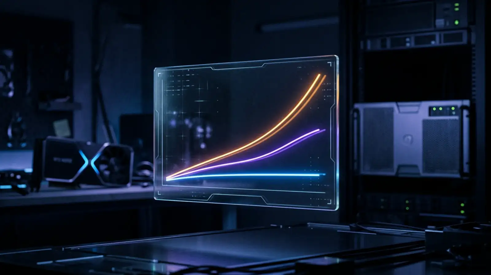

Choosing between an RTX 4090, an RTX 5090, and an H100 SXM5 for self-hosted AI compute in 2026 rarely comes down to the TFLOPS headline. The right GPU is the one whose VRAM, memory bandwidth, and cost per inference hour match the model class and batch shape you're actually running. This guide walks through the four GPU tiers AnonPort offers, the workloads each is sized for, and how to read the throughput figures on the chart.
The four tiers in one paragraph
RTX 4090 (GPU-S, $122.00–329/month) delivers 24 GB GDDR6X at ~1 TB/s memory bandwidth and ~83 TFLOPS FP16. It's the right choice for 7B–13B language models, FLUX.1 / SDXL image generation, Whisper transcription, and Bark text-to-speech. RTX 5090 (GPU-M, $195.50–519/month) steps up to 32 GB GDDR7 at ~1.8 TB/s and ~104 TFLOPS FP16; the extra 8 GB and ~80% bandwidth uplift unlock 27B–32B models comfortably (Gemma-3-27B, Qwen3-32B, Mistral-Small-3) and make fine-tuning smaller Llamas feasible. H100 SXM5 (GPU-L, $832.50–1899/month) is a different category — 80 GB HBM3 at ~3.35 TB/s, ~989 TFLOPS FP16 (Tensor Core), with NVLink-class fabric available; sized for 70B-class language models, long-context inference, and faster training. 2× H100 SXM5 (GPU-XL, $1567.50–3599/month) is for full-precision 70B inference, multi-GPU training, and 100B+ models at Q4 / Q5.

Memory bandwidth dominates LLM inference
For decoder-only transformer inference at batch sizes up to roughly 16, the bottleneck is memory bandwidth, not raw FLOPS. Every generated token forces a full read of the model weights from VRAM (the prefill phase reuses the K-V cache, but each new token reads the weight matrices again). The H100's 3.35 TB/s HBM3 is what makes it ~3× faster per token than a 4090 on the same 70B-class model — not the higher TFLOPS figure. That's also why the RTX 5090's jump from GDDR6X to GDDR7 (~1.8 TB/s vs ~1 TB/s) matters more for inference than the raw FLOPS increase. If your workload is inference-dominated rather than training-dominated, prioritize bandwidth over FLOPS.
What fits in 24 GB / 32 GB / 80 GB
Quantization changes the picture. At Q4_K_M (a typical "good quality" quant): a 7B model needs ~4.5 GB, a 13B ~8 GB, a 27–32B ~20 GB, a 70B ~42 GB, a 100B ~60 GB. Add ~10–15% headroom for K-V cache and CUDA workspace. Practical fits: 24 GB = 7B–13B comfortably, 27–32B with offload pain, 70B not viable. 32 GB = 27–32B comfortably, 70B with CPU offload (slow). 80 GB = 70B comfortably at Q4–Q5, 100B with offload. 160 GB (dual H100) = 70B at FP16 / BF16, 100–180B at Q4. At FP16 / BF16 (no quantization) the numbers double: a 70B at FP16 needs ~140 GB, which is why 2× H100 is the entry point for full-precision flagship model inference.
When the RTX 5090 is the right answer
The RTX 5090's launch in early 2025 created a new sweet spot. For the 27B–32B-class models that matter most in 2026 (Gemma-3-27B, Qwen3-32B, Mistral-Small-3, Phi-4, DeepSeek-R1-Distill-Qwen-32B), the 5090 delivers roughly 2.5× the throughput of a 4090 at half the cost of an H100. If your workload is "I need a genuinely capable assistant model with reasoning, multilingual support, and a 32K context window, but I don't need 70B+", the GPU-M tier is your starting point. It also serves as a generous image generation rig — FLUX.1-dev runs comfortably with 16 GB of VRAM headroom for high-resolution batches.
When you want H100 over 4090
Three signals shift the buying decision to GPU-L (single H100): (1) you're serving 70B-class models or DeepSeek-R1-Distill-Llama-70B and want sub-second time-to-first-token at batch 1; (2) you're running high-concurrency inference (vLLM with batch 16+ users) where the H100's memory bandwidth is the bottleneck breaker; (3) you're training or LoRA fine-tuning on datasets over ~10M tokens and want the FP8 training path the 4090 / 5090 don't have. The H100's FP8 Transformer Engine roughly doubles training throughput vs FP16, making fine-tuning 70B Llama feasible on a single card.
$/token economics
For high-volume workloads, the right comparison is dollars per million tokens at sustained throughput. On Llama-3.1-70B Q4, vLLM 0.7+, batch 16: an RTX 4090 can't host the model without offload (CPU-RAM offload kills throughput by ~10×). An RTX 5090 with CPU offload runs at roughly $X per 1M tokens (approximate; varies by quant). A single H100 SXM5 lands at roughly $1.40–2.20 per 1M output tokens at our $832.50/month entry price. Compare to OpenAI GPT-4o output at ~$10 / 1M and Claude Sonnet at ~$15 / 1M — once your workload reaches roughly 30M tokens per day, self-hosting on a single H100 is cheaper than calling hosted APIs, and the privacy outcome is end-to-end. At lower volumes hosted APIs win on price.
Image, video, and audio workloads
Image generation rarely needs more than a 4090 — FLUX.1-dev, SDXL, SD 3.5 all fit in 24 GB at production quality, and the RTX 4090's ~83 TFLOPS FP16 is sufficient. Moving to 5090 / H100 buys mainly batch-size headroom (more simultaneous generations) rather than per-image speed. AI video (Wan-2.1, CogVideoX-5B, Runway-class workflows) is more demanding — GPU-M is the practical entry point, GPU-L for long-form production quality. Whisper Large v3 ASR and Bark TTS both run comfortably on the 4090; the H100 is overkill for them. Fine-tuning with LoRA or QLoRA on 7B–13B works on a 4090; fine-tuning 32B–70B realistically wants at least a 5090, H100 if you value time.
What about RTX 5090 vs RTX A6000 / A100?
If you've looked at GPU options outside the consumer card line, you may have come across the RTX A6000 (48 GB, datacenter card) or A100 (40 / 80 GB, previous-gen HBM2e). Quick verdict: the A6000 is roughly 4090-class compute with double the VRAM, useful if VRAM is your bottleneck but bandwidth is not (rare); the A100 is one generation behind the H100 and now primarily available on the secondary market — if you find it cheaply it's still a credible 70B inference card, but new builds in 2026 are typically H100. We don't currently offer A6000 or A100 tiers; the catalog jumps from RTX 5090 to H100.
What we offer and what to pick
To summarize the GPU buying decision in one sentence per workload: chatbot / coding assistant under 32B → GPU-S (RTX 4090) for 7B–13B, GPU-M (RTX 5090) for 27B–32B; flagship 70B inference (Llama-3.3-70B-Instruct, DeepSeek-R1-Distill-Llama-70B) → GPU-L (H100 SXM5); full-precision 70B or multi-GPU training → GPU-XL (2× H100 SXM5); image / video / speech generation → GPU-S unless you need batch headroom, then GPU-M. All four tiers ship with CUDA 12.4 + cuDNN pre-installed and 1-click vLLM / Ollama / ComfyUI / Stable Diffusion templates. Full hardware specs at /gpu.